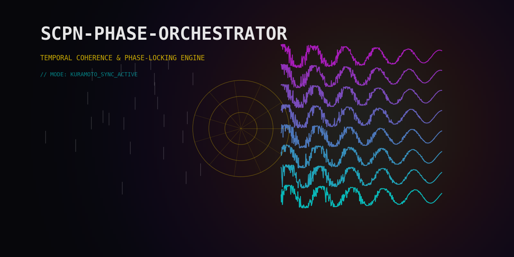

System Overview¶

Core Thesis¶
Any system with coupled cycles maps onto Kuramoto phase dynamics. The orchestrator treats synchrony as a universal state-space: extract phases, integrate coupling, measure coherence, act on knobs. This works because the mathematics of coupled oscillators — the Kuramoto model and its extensions — are structurally universal: they describe neural rhythms, power grid generators, chemical reactions, financial cycles, and distributed systems with the same equations.
The only thing that changes between domains is the binding spec: which signals are oscillators, how they couple, and what "healthy" looks like.
Pipeline¶
Domain Signals
|
v
Domain Binder -----> BindingSpec (YAML)
| declares oscillators, layers, coupling, objectives
v
Oscillator Extractors
| P: Hilbert phase from continuous waveform
| I: inter-event frequency from timestamps
| S: ring-phase from discrete state sequence
v
UPDEEngine
| dtheta_i/dt = omega_i
| + sum_j K_ij sin(theta_j - theta_i - alpha_ij)
| + zeta sin(Psi - theta_i)
|
| Methods: Euler (default), RK4, RK45 (adaptive Dormand-Prince)
| Output: phases, R per layer, cross-layer alignment
v
ImprintModel (optional)
| m_k(t+dt) = m_k(t)*exp(-decay*dt) + exposure*dt
| Modulates: Knm scaling, alpha lag offset
| Captures slow accumulation (drug PK, fatigue, tool wear)
v
Monitor Layer
| CoherenceMonitor: R, PLV, layer coherence
| BoundaryObserver: hard/soft limit checks
| LyapunovGuard: chaos detection
| ChimeraDetector: partial sync patterns
| WindingTracker: cumulative rotation counts
| PAC: phase-amplitude coupling
| TransferEntropy: directed information flow
| Recurrence/RQA: dynamical complexity
| EVS: eigenvalue stability
| Poincare: section analysis
v
Supervisor (RegimeManager + SupervisorPolicy + PolicyEngine)
| RegimeManager: R thresholds + hysteresis -> regime transitions
| SupervisorPolicy: default regime-driven actions
| PolicyEngine: YAML-declared domain-specific rules (policy.yaml)
| ActiveInferenceAgent: FEP-based autonomous zeta/Psi control
| PredictiveSupervisor: forecast-driven preemptive action
| PetriNet: protocol sequencing FSM
| Decides: ControlActions on {K, alpha, zeta, Psi}
| Regime: NOMINAL / DEGRADED / CRITICAL / RECOVERY
v
ActuationMapper + ActionProjector
| Maps ControlActions to domain-specific actuator commands
| Clips values, enforces rate limits
| Validates against boundary constraints
v
Domain Actuators (external)
Pipeline Execution Flow¶
Each integration step follows this sequence:
- Extract: oscillator extractors produce
PhaseStatefrom raw signals (P/I/S channels). - Quality gate:
PhaseQualityScorercomputes weights, masks unreliable oscillators. - Imprint (if enabled): update memory vector, modulate K and alpha.
- Integrate:
UPDEEngine.step()advances phases by one dt. - Monitor: compute R, PLV, check boundaries, update Lyapunov estimates, detect chimeras.
- Supervise: evaluate regime, decide control actions.
- Actuate: map actions to domain commands, apply rate limits.
- Audit: log step to JSONL trace.
The UPDE step alone takes ~0.1ms for N=64 on the pure Python path (measured 2026-04-04, i5-11600K). Full pipeline latency (extract + integrate + monitor + supervise) depends on which monitors are active. Rust FFI latency is not yet measured on this host (spo_kernel not installed). For real-time applications (EEG at 256 Hz = 3.9ms budget), the Python path is sufficient for N<=64 with minimal monitoring.
Dual Objective: R_good / R_bad¶
The ObjectivePartition divides layers into two groups:
- R_good (good_layers): coherence to maximise. High R_good means healthy synchronisation — coordinated neural rhythms, stable power grid frequency, efficient service orchestration.
- R_bad (bad_layers): coherence to suppress. High R_bad means pathological lock-in — epileptic seizures, retry storms, cascading failures, market flash crashes.
The supervisor seeks to raise R_good while lowering R_bad. This dual objective captures systems where some synchrony is desirable and some is harmful. The partition is declared in the binding spec:
Domain-Agnostic Architecture¶
The engine has no domain knowledge. All domain semantics live in the
BindingSpec:
- Which signals are oscillators (P/I/S channel).
- How oscillators group into hierarchy layers.
- What coupling template to use.
- Which boundaries constitute violations.
- What actuators exist and their limits.
- What regime thresholds apply.
A new domain requires writing a binding spec and (optionally) custom extractors. No engine code changes. The system ships with 24 domainpacks covering neuroscience, power grids, finance, robotics, traffic, industrial control, and more.
Engine Variants¶
| Engine | Equation | Use case |
|---|---|---|
UPDEEngine |
Standard Kuramoto | General-purpose, dense coupling |
SparseUPDEEngine |
Standard Kuramoto, CSR sparse | Large N (>100), sparse topology |
SheafUPDEEngine |
Vector-valued phases | Multi-dimensional oscillators |
StuartLandauEngine |
Phase + amplitude | Systems with amplitude dynamics |
InertialKuramotoEngine |
Second-order (with inertia) | Power grids, mechanical systems |
SimplicialEngine |
3-body coupling | Higher-order interactions |
HypergraphEngine |
Hyperedge coupling | Group interactions |
TorusEngine |
Torus topology | Geometric constraints |
SwarmalatorEngine |
Position + phase | Swarm robotics |
DelayedEngine |
Time-delayed coupling | Signal propagation delays |
SplittingEngine |
Operator splitting | Stiff multi-scale systems |
JaxUPDEEngine |
JAX-accelerated | GPU, autodiff, large-scale |
All engines implement the same step() / run() interface and
produce compatible UPDEState output.
Key Data Structures¶
| Structure | Module | Purpose |
|---|---|---|
BindingSpec |
binding.types |
Domain declaration (YAML) |
PhaseState |
oscillators.base |
Extracted phase per oscillator |
CouplingState |
coupling.knm |
Knm + alpha + active template |
UPDEState |
upde.metrics |
R per layer, cross-layer alignment |
BoundaryState |
monitor.boundaries |
Violations (soft/hard) |
ControlAction |
actuation.mapper |
Knob adjustment command |
ImprintState |
imprint.state |
Memory imprint vector |
PolicyRule |
supervisor.policy_rules |
Condition-action rule |
PolicyEngine |
supervisor.policy_rules |
Rule evaluator |
PetriNet |
supervisor.petri_net |
Protocol FSM |
RegimeEvent |
supervisor.events |
Event bus message |
SPOError |
exceptions |
Exception hierarchy |
Rust FFI Acceleration¶
Performance-critical components have Rust implementations in
spo-kernel/:
| Crate | Contents |
|---|---|
spo-engine |
UPDE steppers, coupling, order params, PAC, plasticity, winding |
spo-oscillators |
P/I/S extractors, quality scorer |
spo-supervisor |
Boundary observer, coherence monitor, regime manager, policy |
spo-types |
Shared types, config, errors |
spo-ffi |
PyO3 bindings (17 classes, 11 functions) |
spo-fpga |
Verilog generation for FPGA deployment |
spo-wasm |
WebAssembly build for browser |
The Python code auto-detects spo_kernel availability and uses the
Rust path when present. Fallback to pure Python is always available.
Rust-Python parity is verified by tests/test_ffi_parity.py.
Audit and Replay¶
Every step writes a JSONL record:
{"t": 0.01, "step": 1, "regime": "nominal", "R": [0.82, 0.75],
"actions": [], "boundary_violations": []}
Deterministic replay from audit logs verifies reproducibility:
from scpn_phase_orchestrator.audit import ReplayEngine
replay = ReplayEngine("audit_trace.jsonl")
replay.verify_determinism() # re-runs and compares
The AuditLogger supports structured queries for post-hoc analysis
of regime transitions, control actions, and boundary events.
Deployment Options¶
| Target | Method | Latency |
|---|---|---|
| Python process | pip install |
~0.1ms/step (N=64, measured 2026-04-04) |
| Rust FFI | maturin develop |
not yet measured (FFI not installed on this host) |
| Docker | docker compose up |
not yet measured |
| FPGA (PYNQ-Z2) | KuramotoVerilogCompiler |
not yet measured |
| Browser | WASM bundle | not yet measured |
| gRPC server | spo serve --grpc |
not yet measured |
Stochastic Synthesis of Geometric Fields (SSGF)¶
The SSGF subsystem extends the phase orchestrator with geometric field theory concepts from the SCPN framework:
- GeometryCarrier: tracks the state of a geometric field coupled to the oscillator phases. Phase coherence modulates field curvature.
- TCBO (Thermodynamic-Cybernetic Boundary Observer): monitors the system's thermodynamic consistency — entropy production, free energy balance, Boltzmann weighting of states.
- PGBO (Probabilistic-Geometric Boundary Observer): monitors geometric constraints — closure, consistency of curvature with coupling topology.
- Ethical Cost: computes ethical cost of control actions for safety-critical applications (medical, nuclear).
SSGF is optional and domain-specific. Enable it in the binding spec for systems where geometric field coupling is physically meaningful (plasma control, gravitational wave detection, cosmological models).
Testing and Validation¶
The system includes 3921 collected tests (as of 2026-04-04) organised in tiers:
| Tier | Count | Scope |
|---|---|---|
| Unit tests | ~1500 | Individual functions and classes |
| Integration tests | ~400 | Cross-module pipelines |
| Property tests | ~200 | Hypothesis-based invariant verification |
| Performance benchmarks | ~100 | Latency and throughput thresholds |
| Rust parity tests | ~50 | Python vs Rust output equivalence |
| Physics validation | ~50 | Mathematical correctness (Kuramoto theory) |
CI runs the full suite on every push across Python 3.10-3.13 and Rust stable on Linux, macOS, and Windows.
What This System Is NOT¶
- Not a general ODE solver. It solves specifically the Kuramoto family of coupled oscillator equations. For arbitrary ODEs, use scipy.integrate or diffrax.
- Not a signal processing library. Phase extraction is the entry point, not the focus. For signal processing, use MNE-Python, scipy, or librosa.
- Not a replacement for domain expertise. The binding spec encodes domain knowledge. The engine is only as good as the spec.
- Not real-time guaranteed. The Python path has GC pauses. For hard real-time, use the FPGA path or the Rust library directly.
Version History¶
| Version | Milestone |
|---|---|
| v0.1 | Core UPDE engine, P/I/S extractors, basic supervisor |
| v0.2 | Sparse engine, RK45 adaptive stepping, PLV/PAC monitors |
| v0.3 | Petri net supervisor, event bus, boundary observer, Rust FFI |
| v0.4 | Stuart-Landau amplitude dynamics, imprint model, 24 domainpacks |
| v0.4.1 | Sheaf UPDE, active inference controller, SSGF, Hodge decomposition |
Current: v0.4.1. The next milestone (v0.5.0) targets full module wiring validation, expanded Rust FFI coverage, and 300+ line documentation for all core specs and concepts.
Further Reading¶
- Oscillators P/I/S — channel extraction details.
- Control Knobs — K, alpha, zeta, Psi.
- Memory Imprint — adaptation model.
- Phase Contract — interface specification.
- Knm Calibration — coupling tuning.
- Start Here — role-based entry points.
References¶
- [kuramoto1975] Y. Kuramoto (1975). Self-entrainment of a population of coupled non-linear oscillators. Lecture Notes in Physics 39, 420-422.
- [acebron2005] J. A. Acebron et al. (2005). The Kuramoto model: a simple paradigm for synchronization phenomena. Rev. Mod. Phys. 77, 137-185.
- [sakaguchi1986] H. Sakaguchi & Y. Kuramoto (1986). A soluble active rotater model. Prog. Theor. Phys. 76, 576-581.
- [friston2010] K. J. Friston (2010). The free-energy principle. Nature Rev. Neuroscience 11, 127-138.
- [strogatz2000] S. H. Strogatz (2000). From Kuramoto to Crawford. Physica D 143, 1-20.